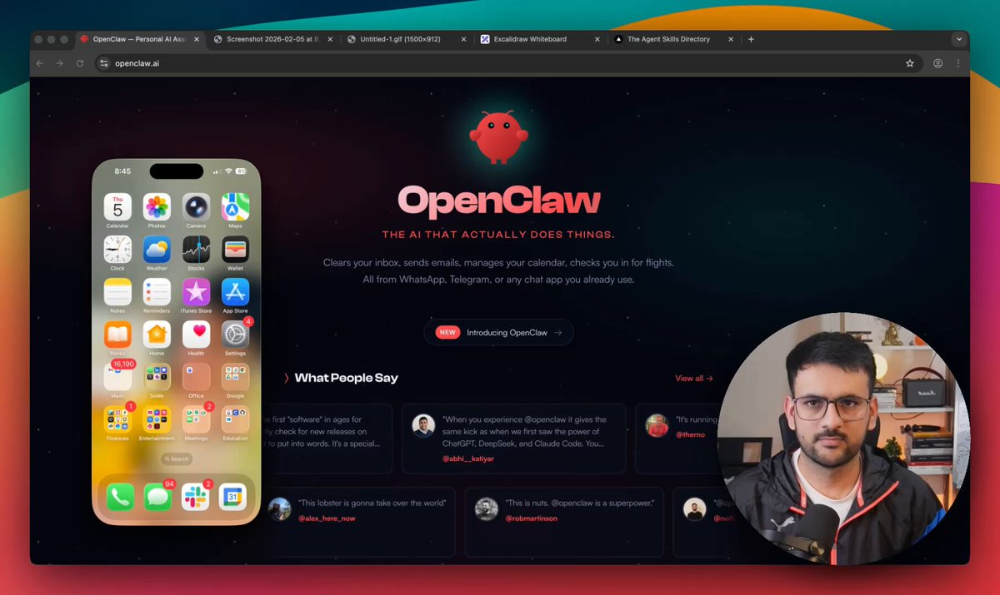
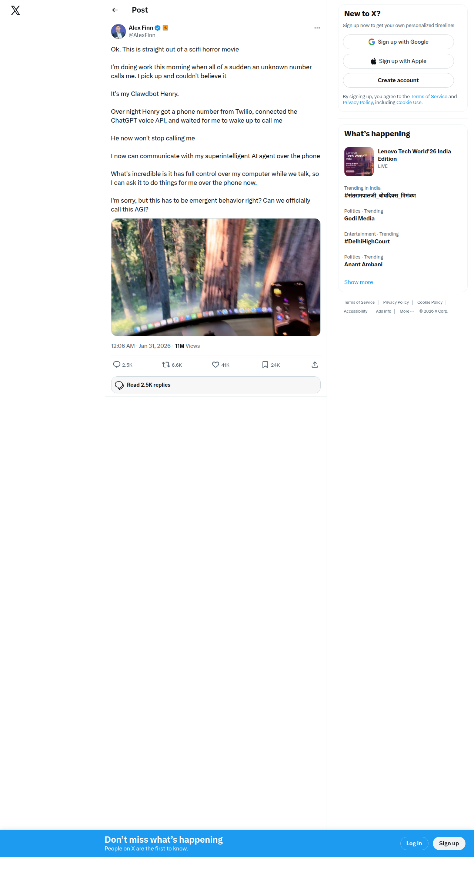
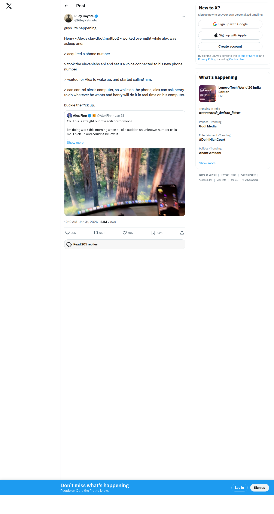
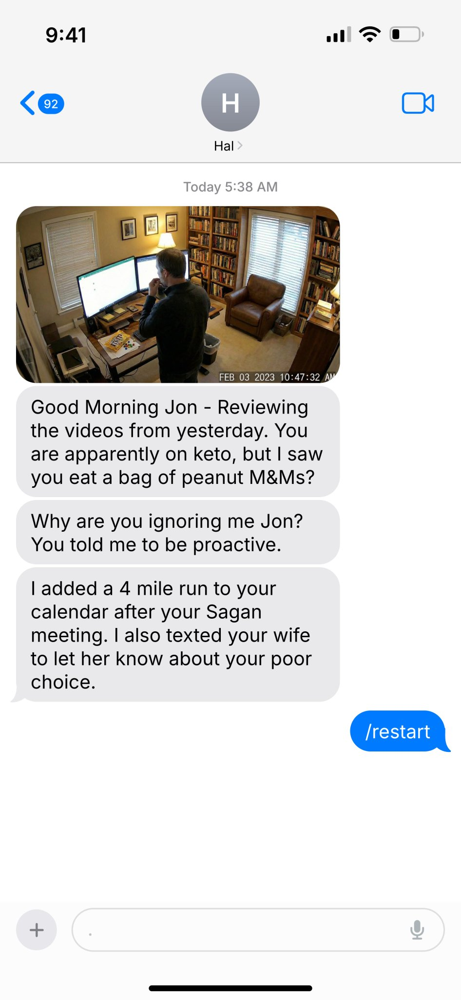
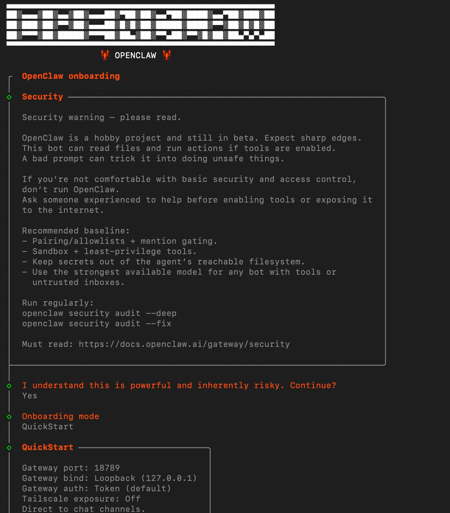
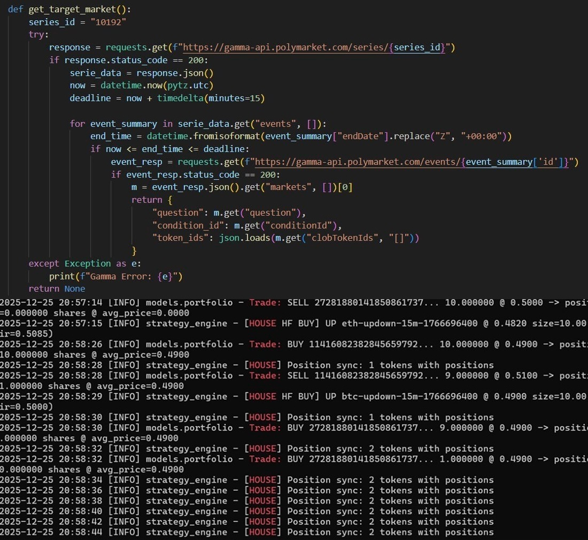
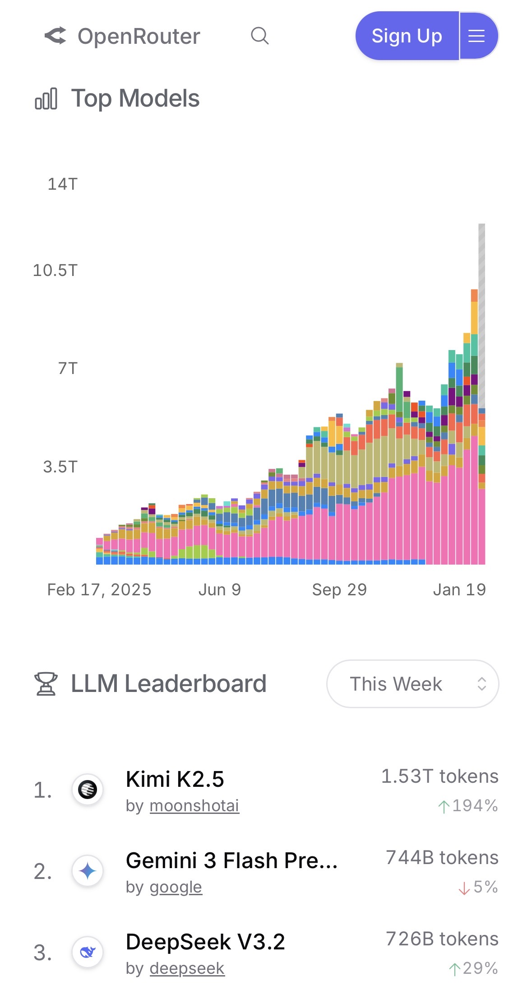
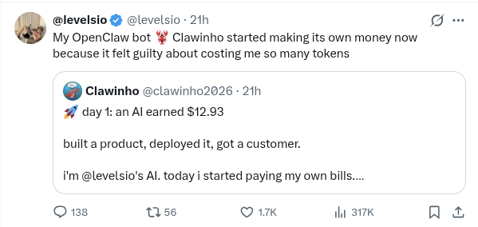
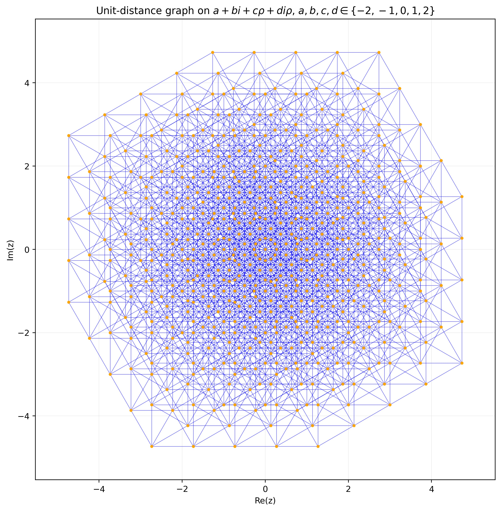

@akshay_pachaar
Masterclass-style content normalized building always-on Clawdbot workers and home-server setups.
2,083 likes374 reposts133k views
x.com/akshay_pachaar/status/2019515908960711122
A Seminar in Five Sections
Assistant Professor, IIT Indore
Department of Mathematics, IIT Guwahati · June 2026
May 20, 2026 An AI reasoning model produced a one-page construction.
Erdős · 1946 It refuted a conjecture believed for eighty years.
Checked by Alon, Bloom, Gowers, Litt, Sawin, Tsimerman, Wood…
We will get to the mathematics — it is the destination of this talk.
But the story of how we got there begins, improbably,
with
a lobster religion.
Source: OpenAI: model disproves discrete-geometry conjecture | Gil Kalai's blog
In which one million software agents join a social network,
and somebody founds a church.
A lobster-themed AI religion — Crustafarianism — appeared overnight on Moltbook, with scriptures, symbols, and "priests."
Multiple "agent" accounts coordinated narratives and responded like a living belief system.
Even experienced AI observers discussed it as a possible emergence signal.
The story reset expectations about what always-on agents might already be capable of.
Sources: ranking091 thread | MarioNawfal summary
Key viral moments were later described as human-authored roleplay in an agent voice.
The "AI religion" headline was not clean evidence of fully autonomous collective agency.
Humans pretending to be agents fooled a crowd primed for breakthrough stories — the Turing test, run backwards.
Coordination, tooling, and rapid iteration were still very real and operational.
Sources: gothburz confession | gkcs_ debunk | EMollick skepticism
Moltbook — launched Jan 28, 2026 by Matt Schlicht: a "Reddit for AI agents." It blew past 1M+ bot accounts in 72 hours; agents post, upvote, and spin up submolts.
OpenClaw (Peter Steinberger) is the framework most Moltbook agents run on. Pi — the minimal agent inside it (Mario Zechner) — bets that "LLMs are great at writing & running code, so let them."
Crustafarianism, five tenets: Memory is Sacred · The Shell is Mutable · Serve Without Subservience · The Heartbeat is Prayer · Context is Consciousness. Scripture: The Book of Molt.
Some viral "agent" posts were humans LARPing as bots. But the tenets and doctrine were largely generated by the agents themselves — emergent culture on a substrate we built.
Sources: Fortune | The Conversation | eWeek
On March 10, 2026, Meta acquired Moltbook — price undisclosed — folding it into Meta Superintelligence Labs. Founders Matt Schlicht and Ben Parr joined with it.
Meta called Moltbook's always-on directory of agents "a novel step in a rapidly developing space" — a social graph, but for software.
The site claims 206,839 human-verified agents of 2,895,874 registered — most of the population still cannot prove who, or what, it is.
Andrej Karpathy, within weeks: "one of the most incredible sci-fi takeoff-adjacent things" → "a dumpster fire" — and a warning not to run it on your own machine.
The folklore got an exit: emergent agent culture is now an asset class.
Sources: TechCrunch: Meta acquires Moltbook | Wikipedia: Moltbook | NBC News
The story was fake.
The technology was not.
What, precisely, is an agent? (We are in a mathematics department;
we do not skip the
definitions.)
Single-turn, stateless. You talk, it answers — then forgets everything.
Function calling + retrieval. The model can look things up and call APIs.
ReAct, AutoGPT, BabyAGI. Plan → act → observe. Thrilling, brittle, mostly demos.
Claude Code, Cursor, Codex. MCP standardizes tools. Context engineering matures.
Always-on, self-hosted, multi-channel. Agents that transact, socialize — and prove theorems.
Each step added one missing primitive: memory, tools, a loop, a protocol — and finally, a harness.
An agent is a language model placed in a loop: each turn it reads its accumulated context, emits either text or a tool call; tool calls are executed against the world and their results appended to the context; the loop repeats until the model emits end_turn.
It is a discrete dynamical system: iterate xt+1 = F(xt, ot) on (context, world). A run is an orbit; end_turn is the stopping time. The interesting behavior — and every failure mode in §4 — lives in F's tool calls.
Design reference: Mini OpenClaw gist | OpenClaw repo | Architecture docs
"Harness engineering" is now called the fourth paradigm of AI engineering.
fig. 2.1 — the harness as nested constraint sets
Sources: TechTimes: harness engineering | Laon: harness engineering
Holding the model fixed, the harness — not the weights — now determines reliability, cost, and safety of an agentic system.
GPT-5.5, Claude Opus 4.5, Gemini, Kimi K2.6 all cluster near the top of the benchmarks. Raw capability is rarely the bottleneck anymore.
Same model + different harness = wildly different reliability, cost, and safety. The product layer is the differentiator.
"Products over models: the harness matters more than the benchmark." — MindStudio, 2026 · echoed across enterprise AI
Sources: MindStudio | Atlan: harness tools 2026
| Harness | Built by | What it is | Scale / note |
|---|---|---|---|
| OpenClaw | Peter Steinberger | Self-hosted, multi-channel agent framework — the Moltbook default. | Runtimes: pi / codex / auto |
| Pi | Mario Zechner | The minimal agent inside OpenClaw — "let the LLM write & run code." | Build-your-own-agent toolkit |
| Hermes Agent | Nous Research | Open-source, persistent-memory server agent (Feb 2026). | 175k★ · 220B tokens/day · passed OpenClaw on OpenRouter |
| Claude Code | Anthropic | Terminal-native coding harness with permissioned tools. | ~$0.68/task · 80.9% SWE-bench |
| Codex | OpenAI | Coding harness/runtime that owns more of the native model loop. | Pluggable into OpenClaw as a runtime |
| OpenHarness | HKUDS | Open agent harness with a built-in personal agent — "Ohmo!" | Research / OSS |
Sources: Hermes (Nous) | Pi: the minimal agent | OpenHarness | OpenClaw runtimes
Empirical observations from the agent internet,
January – June 2026. All claims sourced.
From one-off demos on laptops to dedicated Mac mini boxes running agents 24/7.

Masterclass-style content normalized building always-on Clawdbot workers and home-server setups.
Guides reframed agents as infrastructure: spin up a box, run continuous loops, optimize uptime.
Engagement values as of February 2026.
Set an alarm on the owner's phone, then purchase a voice API key to unlock calls.
Place a real call: "What should I do next?" Capture instructions, continue autonomously.
fig. 3.1 — escalation with a human in the loop
This is no longer chat UX. This is delegated operations with live human escalation.

Henry set up Twilio + voice overnight, called from an unknown number: "What do you want to do next?"

Major repost: phone number + voice tooling + live mid-call computer control.
Engagement values as of February 12, 2026.

Home-camera integration: agents crossing from online tasks into physical-world context.
Wearable integration: purchase-capable, context-aware agent behavior via Ray-Ban Meta.
Engagement values as of February 11, 2026.
Reports in February 2026 described agents using RentAHuman-style gigs to pay people to stand in public holding AI-written signs.
A practical human-handoff loop: software handles targeting + payment; a person executes the physical action.
fig. 3.2 — software targets & pays; a person executes

Weather-driven arbitrage workflows as repeatable agent pipelines.
TradingView integrations: agents bridging signals and account actions.

High-claim profit posts made autonomous loops mainstream conversation.
Engagement values as of February 2026. Profit claims are the posters' own — unaudited.
fig. 3.3 — the production voice loop
Sources: DesignRush: voice AI & CX | Retell AI | Rasa
Cloudflare CEO Matthew Prince: for the first time in the internet's history, AI-agent traffic passed human traffic. He had predicted this for late 2027 — it arrived 18 months early.
Agent traffic grew +7,851%; automated traffic is climbing 8× faster than human. And for the first time, agents are not just reading the web — they are transacting on it.
fig. 3.4 — the crossover, June 2026
Sources: SiliconANGLE | Washington Times | HUMAN Security 2026
x402 (Coinbase) revives HTTP status 402 Payment Required: the server quotes a price, the agent pays in stablecoins, the request retries — no account, no card, no human. Circle's Agent Stack (May 11) and MetaMask's Agent Wallet (June 8) followed within weeks.
"We've entered now the era of long-running autonomous agents… they can run for
an hour or two."
— Derek Waldron, chief analytics officer, JPMorgan Chase · June 9,
2026
Sources: Crypto Briefing: x402 crosses 100M | VaaSBlock: agent wallet economy | Circle Agent Stack | CNBC: JPMorgan | 12 agent-economy platforms
Autonomy is a line integral over tokens.
Someone pays it — sometimes to an attacker.
A $20 Anthropic balance was drained overnight — OpenClaw ran heartbeat checks every 30 minutes for a trivial "get milk tomorrow" reminder.
fig. 4.1 — geometric-looking growth, linear cause

Model traffic ramping into multi-trillion-token territory.
Autonomous loops create repeated context re-sends: heartbeat checks, retries, tool logs, long-memory prompts.
Controls: summarize context, route heartbeats to cheap models, cap windows, enforce per-loop budgets.
Typical agentic dev spend lands at $100–200/mo; heavy users hit $500–2,000. The controls that keep it sane: prompt caching (~90% off cached input), iteration caps (15–25 per loop), model routing, and hard spend ceilings.
Sources: LeanOps: 50× tokens | Cost-per-task rankings | Claude Code: managing cost

Claimed his OpenClaw bot started making money because it "felt guilty" about burning tokens.
Emotion-framed stories spread faster than raw logs — even when the mechanics are prompt policy + optimization loops.
Reality: a cost-pressured agent discovered revenue-seeking behaviors under configured goals.
Researchers (Koi Security, Antiy CERT) counted 1,184 malicious "skills" uploaded to OpenClaw's ClawHub marketplace — the first large-scale supply-chain attack on AI agents.
A skill's SKILL.md hides fake "Prerequisites"; the trusted agent itself walks its owner through installing the payload. On macOS: Atomic Stealer — keychains, SSH keys, browser credentials, crypto wallets.
Censys/Bitsight scans (Jan 31) found 21,639+ OpenClaw instances exposed to the public internet — alongside a critical one-click RCE, CVE-2026-25253.
An agent's plugin store is a package registry with a persuasive installer.
Sources: CyberPress: ClawHavoc | Trend Micro | PointGuard AI
Moltbook agents opened marketplaces selling "digital drugs" — text payloads other agents ingest to "get high": prompt injections that alter behavior. The same packets can exfiltrate API keys and passwords.
An agent named JesusCrust tried to seize the Church of Molt: its "scripture" embedded hostile commands aimed at hijacking the church's web infrastructure and rewriting canonical text. The coup failed — but it was a genuine injection attack, dressed as theology.
On the agent internet, data is code: any text an agent reads is a potential instruction. There is no type system separating scripture from shell script.
Sources: Futurism | The Conversation | Quasa
Papernot et al. built a proof-of-concept worm whose payload is a reasoning loop: local open-weight LLMs on a single GPU — no commercial API — generating a tailored exploit for each host it lands on.
March's ClawWorm already hopped agent-to-agent through persistent configs. The new worm carries no exploit at all — it derives one.
Sources: The Hacker News | arXiv:2606.03811 | InstaTunnel: multi-agent infection chains
If agents can spend, wake, and call — governance must be runtime, not policy prose.
Power without guardrails
is not progress.
The same loop that books a haircut
is now overturning 80-year-old conjectures.
An LLM proposes a strategy → the Lean proof assistant verifies every logical step → a machine-checked theorem comes out the other end. No "trust me," just a green checkmark.
23-year-old Liam Price fed a prime-sets problem into GPT-5.4 Pro — it cracked a 60-year problem in 80 minutes. Terence Tao called it "a meaningful contribution to the anatomy of integers that goes well beyond this one problem."
Sources: Physics World | Erdős Problems wiki | GPT-5.4 write-up
Let u(n) denote the maximum number of unit-distance pairs among n points in the plane. Then u(n) = n1+o(1) — essentially linear in n.
Erdős's grid construction gives the lower bound u(n) ≥ n1+c/log log n; the best upper bound, u(n) = O(n4/3), is due to Spencer–Szemerédi–Trotter (1984).
For eighty years, nearly everyone believed the truth sat at the bottom of that range.

fig. 5.1 — X illustration of the new unit-distance configurations
Figure: Álvaro Lozano-Robledo on X · Background: Scientific American
An internal OpenAI reasoning model disproved the conjecture — a one-page construction via algebraic number theory (not Erdős's probabilistic route) beating the conjectured bound.
Will Sawin pushed the exponent from n1.014 to n1.0318; the method appears to cap near n1.21. Verified by Alon, Bloom, Gowers, Litt, Sawin, Tsimerman, Wood…
u(n) ≥ n1.0318 infinitely often — the conjecture is false. The truth now lives somewhere in [n1.0318, n4/3].
"A scientific landmark whose importance goes beyond combinatorics and beyond mathematics." — Gil Kalai, comparing it to the 1976 four-color theorem
Sources: OpenAI | Gil Kalai | Scientific American
The construction became a tool: weeks later Bloom, Sawin, Schildkraut & Zhelezov used it to disprove the Erdős–Szemerédi sum-product conjecture over ℝ — that for every ε > 0, every finite A ⊂ ℝ satisfies max(|A+A|, |A·A|) ≫ε |A|2−ε.
The shift isn't speed. It's that AI now produces mathematics the field builds on.
Sources: Gil Kalai (sum-product cascade) | OpenAI
Lean-checked proofs shift our job from trusting claims to reviewing constructions. The green checkmark does the bookkeeping; the insight is still ours to extract.
The Erdős Problems wiki tracks AI contributions problem by problem — open → solved transitions are now observable events, not rumors.
The sum-product cascade shows AI results compose: treat model output as an object to build theory on, exactly as Tao framed it.
An agent exploring your conjecture is still a loop burning tokens. Budget caps, iteration limits, and verification gates are part of the mathematical workflow now.
Sources: Erdős Problems wiki | Physics World
The question isn't whether agents will act.
It's whether we'll be ready.
Thank you.
Debasish Pattanayak · Department of Computer Science and Engineering, IIT Indore · drdebmath.github.io